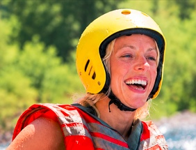
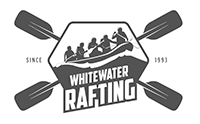
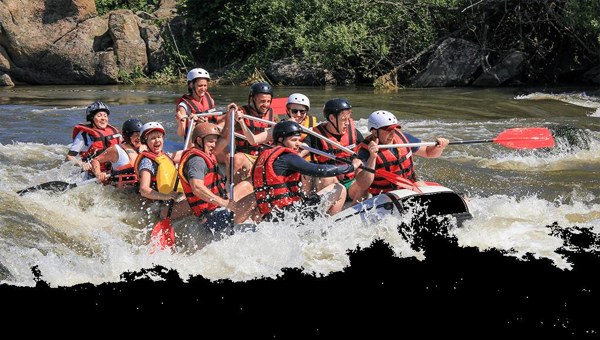

Our mission is to create exciting and safe rafting adventures while helping people enjoy nature, build lasting memories, and have fun on the water.



Our mission is to create exciting and safe rafting adventures while helping people enjoy nature, build lasting memories, and have fun on the water.
Founded in 1995, White Rafting Company was the first commercial whitewater outfitter in the Philippines. Operating in Cagayan de Oro, they turned local rapids into a major tourism draw and remain a top-rated guide company today.